- AMERICAN BEAUTY (November, 1970)
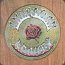
Warner: WS 1893
Produced by the Grateful Dead
The Dead:
- Jerry Garcia--guitar, pedal steel, piano, vocals
- Phil Lesh--bass, guitar, piano, vocals
- Bob Weir--guitar, vocals
- Pig Pen (Ron McKernan)--harmonica, vocals
- Mickey Hart--percussion
- Bill Kreutzmann--drums
- Robert Hunter--songwriter
Thanks to:
- Dave Torbert--bass on "Box of Rain"
- Dave Nelson--electric guitar on "Box of Rain"
- David Grisman--
mandolin on "Friend of the Devil" and "Ripple"
- Howard Wales--organ on "Candyman" and "Truckin" and piano on
"Brokedown Palace"
- Ned Lagin--piano on "Candyman"
- New Riders of the Purple Sage
Art: Kelly-Mouse studios. Rear photo: George Conger
Tracks:
- "Box of Rain": m: Lesh; w: Hunter
- "Friend of the Devil": m: Garcia and John Dawson; w: Hunter
- "Sugar Magnolia": m: Weir; w: Hunter and Weir
- "Operator": w & m: McKernan
- "Candyman": m: Garcia; w: Hunter
- "Ripple": m: Garcia; w: Hunter
- "Brokedown Palace": m: Garcia; w: Hunter
- "Till the Morning Comes": m: Garcia; w: Hunter
- "Attics of My Life": m: Garcia; w: Hunter
- "Truckin": m: Garcia, Weir, Lesh; w: Hunter
- ANTHEM OF THE SUN (July 18,
1968)
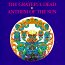
- Warner WS 1749
- Warner 46021; "Remixed September, 1971, at Wally Heider
Studios, SF."
- CD release has the original mix
Musicians:
- Jerry Garcia--Lead guitar, acoustic guitar, kazoo and
vibraslap
- Bob Weir--Rhythm guitar, 12 string guitar, acoustic guitar
and kazoo
- Ron McKernan--Organ and celesta claves
- Phil Lesh--Bass, trumpet, harpsichord, guiro, kazoo, piano
and timpani
- Mickey Hart, Bill Kreutzmann--Drums, orchestra bells, gong,
chimes, crotales, prepared piano, finger cymbals
- Tom Constanten--Prepared piano, piano and electronic tape
Art: Front cover by Bill Walker; liner photo by Thomas Weir
Tracks:
- "That's It For the Other One"
- "Cryptical Envelopment": w & m: Garcia
- "Quodlibet for Tenderfeet": w & m: Weir
- "The Faster We Go the Rounder We Get": The Grateful Dead
- "We Leave the Castle": The Grateful Dead
- "New Potato Caboose": m: Lesh; w: Petersen
- "Born Cross-Eyed": w & m: Weir
- "Alligator": m: Lesh & McKernan; w: Hunter & McKernan
- "Caution (Do Not Stop on Tracks)": w & m: McKernan
- AOXOMOXOA (June 20, 1969)
A thematic essay is available.
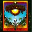
Warner Bros 1790.
"Remixed September, 1971, at Alembic Studios, S.F.; Engineers:
Bob [Matthews] and Betty [Cantor]"
The Band:
- Phil Lesh--Basses & Vocals
- Bob Weir--Guitars & Vocals
- Jerry Garcia--Guitars & Vocals
- Mickey Hart--Percussion
- Bill Kreutzmann--Percussion
- Tom Constanten--Keyboards
- Ron McKernan--Pig Pen
The Supporting Musicians:
- Marma-Duke
- David Nelson
- Peter Grant [pedal steel]
- Wendy
- Debbie
- Mouse
Art: Front cover by Rick Griffin; Back cover photo by Tomas Weir.
Tracks:
- "Saint Stephen": m: Garcia & Lesh; w: Hunter
- "Dupree's Diamond Blues": m: Garcia; w: Hunter
- "Rosemary": m: Garcia; w: Hunter
- "Doin' That Rag": m: Garcia; w: Hunter
- "Mountains of the Moon": m: Garcia; w: Hunter
- "China Cat Sunflower": m: Garcia; w: Hunter
- "What's Become of the Baby": m: Garcia; w: Hunter
- "Cosmic Charley": m: Garcia; w: Hunter
- BLUES FOR ALLAH (September 1, 1975)
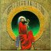
- Grateful
Dead Merchandising's entry: includes audio clips
- LP: Grateful Dead Records: UA GD LA494G
- CD: Grateful Dead: GDCD4001
- Jerry Garcia--Guitars & vocals
- Keith Godchaux--Keyboards & vocals
- Donna Godchaux--Vocals
- Bill Kreutzmann--Drums & percussion
- Phil Lesh--Bass & vocals
- Bob Weir--Guitars & vocals
- Mickey Hart--Percussion & crickets
- Robert Hunter--Lyrics
- Steven Schuster--Reeds & flute
Art: Cover paintings by Philip Garris
Tracks:
- "Help on the Way": m: Garcia; w: Hunter
- "Slipknot!": m: Garcia, K. Godchaux, Kreutzmann, Lesh, & Weir
- "Franklin's Tower": m: Garcia & Kreutzmann; w: Hunter
- "King Solomon's Marbles": m: Lesh
- "Stronger Than Dirt or Milkin' the Turkey": m: Hart, Kreutzmann & Lesh
- "The Music Never Stopped": m: Weir; w: Barlow
- "Crazy Fingers": m: Garcia; w: Hunter
- "Sage & Spirit": m: Weir
- "Blues For Allah": m: Garcia; w: Hunter
- "Sand Castles & Glass Camels": m: Garcia, K. & D. Godchaux, Kreutzmann, Lesh & Weir
- "Unusual Occurances [sic] in the Desert": m: Garcia; w: Hunter
- BUILT TO LAST (October 31, 1989)
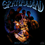
Arista: AL9-8575
Grateful Dead
- Jerry Garcia
- Mickey Hart
- Bill Kreutzmann
- Phil Lesh
- Brent Mydland
- Bob Weir
Produced by Jerry Garcia and John Cutler
Cover art and direction: Alton Kelly
Tracks:
- "Foolish Heart": m: Garcia; w: Hunter
- "Just a Little Light": m: Mydland; w: Barlow
- "Built to Last": m: Garcia; w: Hunter
- "Blow Away": m: Mydland; w: Barlow
- "Standing on the Moon": m: Garcia; w: Hunter
- "Victim or the Crime": m: Weir; w: Graham & Weir
- "We Can Run": m: Mydland; w: Barlow
- "Picasso Moon": w & m: Weir, Barlow, Bralove
- "I Will Take You Home": m: Mydland; w: Barlow
- DEAD SET (August, 1981)
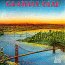
Arista: A2L8606 or AL9-8112
Tracks:
- "Samson And Delilah": Gary Davis
- "Friend of the Devil": m: Garica & Dawson; w: Hunter
- "New Minglewood Blues": trad.; arr. Weir
- "Deal": m: Garcia; w: Hunter
- "Candyman": m: Garcia; w: Hunter
- "Little Red Rooster": trad.
- "Loser": m: Garcia; w: Weir
- "Passenger": m: Lesh; w: Peter Monk
- "Feel Like a Stranger": m: Weir; w: Barlow
- "Franklin's Tower": m: Garcia; w: Hunter
- "Rhythm Devils": Hart & Kreutzmann
- "Fire on the Mountain": m: Hart; w: Hunter
- "Greatest Story Ever Told": m: Weir; w: Hunter
- "Brokedown Palace": m: Garcia; w: Hunter
now listed on a separate page
- DOZIN' AT THE KNICK (October, 1996)
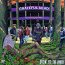
Arista
- DYLAN AND THE DEAD (January 31, 1989)
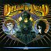
Columbia: OC45056
Tracks: (all songs by Bob Dylan)
- "Slow Train"
- "I Want You"
- "Gotta Serve Somebody"
- "Queen Jane Approximately"
- "Joey"
- "All Along the Watchtower"
- "Knockin' on Heaven's
Door"
- EUROPE '72 (November, 1972)
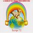
Warner Bros: 3WX2668
The Band
- Jerry Garcia--lead guitar, vocals
- Bob Weir--rhythm guitar, vocals
- Phil Lesh--electric bass, vocals
- Ron (Pigpen) McKernan--organ, harmonica, vocals
- Keith Godchaux--piano
- Bill Kreutzmann--drums
- Donna Godchaux--vocals
- Robert Hunter--songwriter
Artwork--Kelley/Mouse Studios
Tracks:
- "Cumberland Blues": m: Garcia & Lesh; w: Hunter
- "He's Gone": m: Garcia; w: Hunter
- "One More Saturday Night": w & m: Weir
- "Jack Straw": m: Weir; w: Hunter
- "You Win Again": Hank Williams
- "China Cat Sunflower": m: Garcia; w: Hunter
- "I Know You Rider": trad.;
arr. Grateful Dead
- "Brown-Eyed Women" [aka "Brown-Eyed Woman"]: m: Garcia; w:
Hunter
- "Hurts Me Too": Elmore James
- "Ramble On Rose": m: Garcia; w:
Hunter
- "Sugar Magnolia": m: Weir; w: Hunter
- "Mr. Charlie": m: McKernan; w:
Hunter
- "Tennessee Jed": m: Garcia; w: Hunter
- "Truckin'": m: Garcia, Lesh & Weir; w: Hunter
- "Epilog": Grateful Dead
- "Prelude": Grateful Dead
- "Morning Dew": Bonnie Dobson
- FALLOUT FROM THE PHIL ZONE: June 17, 1997
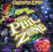
Grateful Dead REcords: GDCD 4052; distr. by Arista Records
Produced by John Cutler & Phil Lesh; Tape archivist: Dick Latvala
Liner notes by Lesh
Cover art by Liquid Blue Design Department (Shawn Kenney)
Photography by Rob Cohn
Package design: Amy Finkle
Disc One:
- "Dancin' In the Streets": Stevenson/Gaye/I. Hunter
- "New Speedway Boogie": Garcia/Hunter
- "Viola Lee Blues": Noah Lewis
- "Easy Wind": Hunter
- "Mason's Children": Garcia/Lesh/Weir/Hunter
- "Hard To Handle (Yes I Ram)": Redding/Jones/Isabell
Disc Two:
- "The Music Never Stopped": Weir/Barlow
- "Jack-A-Roe": Trad., arr. GD
- "In the Midnight Hour": Pickett/Cropper
- "Visions of Johanna": Dylan
- "Box of Rain": Lesh/Hunter
- FOR THE FAITHFUL see: RECKONING
- FROM THE MARS HOTEL (June 27, 1974)
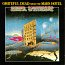
- LP: Grateful Dead Records: GD 102
- CD: Grateful Dead Records: GDCD4007
"John McFee plays pedal steel on 'Pride of Cucamonga'"-- Deadbase VIII
Cover art: Kelley-Mouse
Tracks:
- "U.S. Blues": m: Garcia; w: Hunter
- "China Doll": m: Garcia; w: Hunter
- "Unbroken Chain": m: Lesh; w: Petersen
- "Loose Lucy": m: Garcia; w: Hunter
- "Scarlet Begonias": m: Garcia; w: Hunter
- "Pride of Cucamonga": m: Lesh; w: Petersen
- "Money Money": m: Weir; w: Barlow
- "Ship of Fools": m: Garcia; w: Hunter
- GO TO HEAVEN (April 28, 1980)
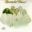
Arista: AL 9508
Grateful Dead:
- Jerry Garcia
- Brent Mydland
- Billy Kreutzmann
- Bob Weir
- Phil Lesh
- Mickey Hart
Produced by Gary Lyons
Illustration by Stanley Mouse; Photograph by Bob Seidemann.
Tracks:
- "Alabama Getaway": m: Garcia; w: Hunter
- "Far From Me": w & m: Mydland
- "Althea": m: Garcia; w: Hunter
- "Feel Like a Stranger": m: Weir; w: Barlow
- "Lost Sailor": m: Weir; w: Barlow
- "Saint of Circumstance": m: Weir; w: Barlow
- "Antwerp's Placebo (The Plumber)": m: Hart & Kreutzmann
- "Easy To Love You": m: Mydland; w: Barlow
- "Don't Ease Me In": trad.; arr. Grateful Dead